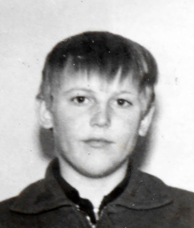
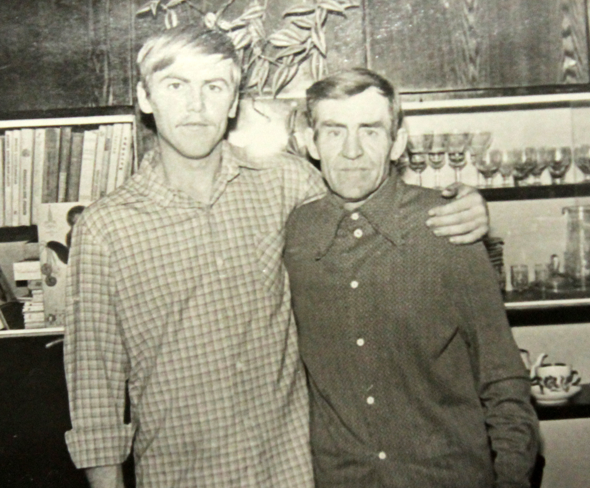
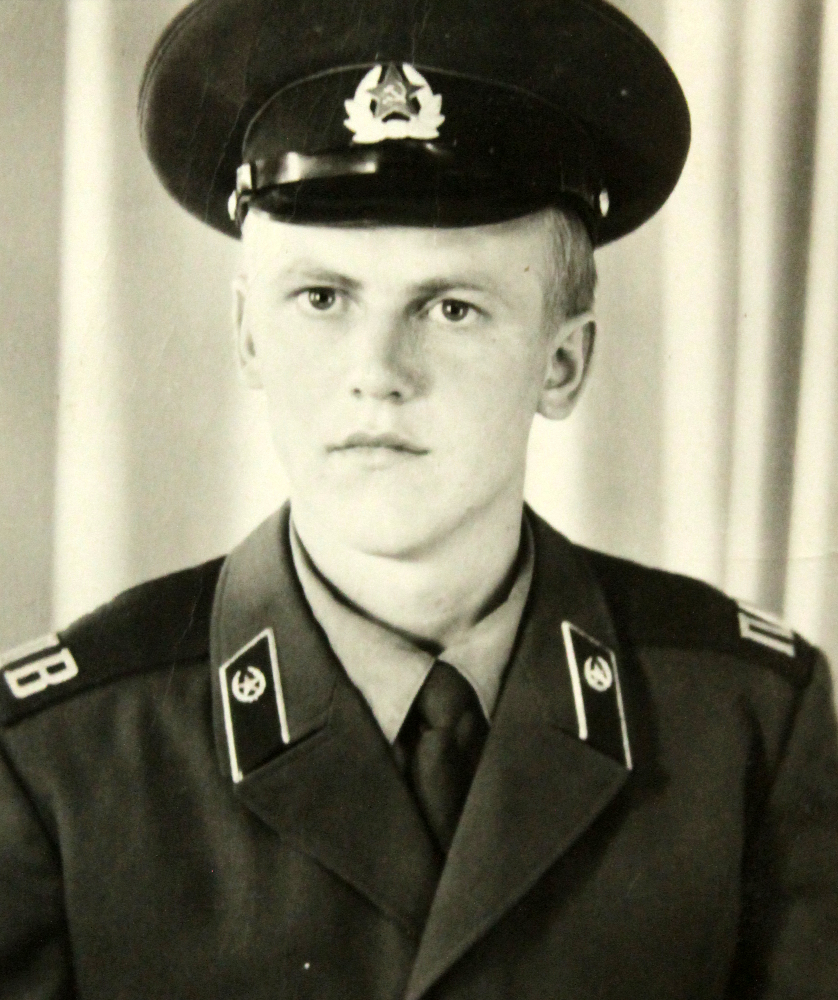
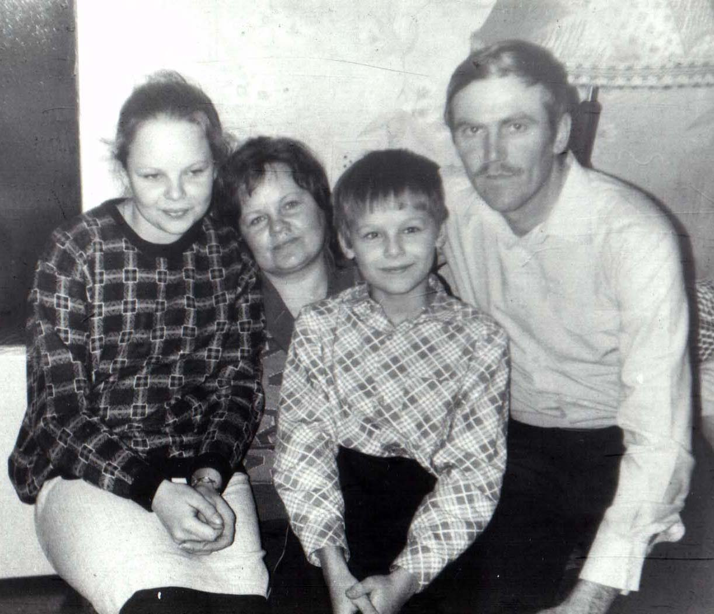
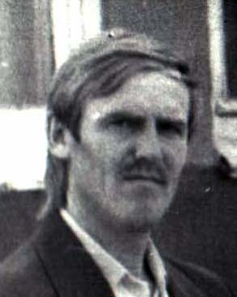

Герилович Валерий Леонидович (06.12.1957)
Возраст: 63
Место жительства: г. Черногорск
Окончил среднюю Краснополянскую школу в 1975 году
с 27.01.1976 - окончил курс трактористов
с 09.05.1976 - призван в армию. Служил в г. Усурийск
с 12.09.1978 - шофер 2 класса с. Краснополянск
1981г - Окончил Селскохозяйственный техникум с. Шушенское
с 15.05.1989 - плотник-бетонщик 2 разряда СУ "Саянпромстрой" г. Черногорск
с 02.10.1989 - плотник-бетонщик 4 разряда СУ "Саянпромстрой" г. Черногорск
с 01.02.1991 - электрогазосварщик 4 разряда г. Черногорск
с 01.02.1994 - газоэлектросварщик ручной и дуговой сварки 5 разряда
Отец: Герилович Леонид Федорович (01.01.1927 - 25.01.1995)
Мать: Герилович (Казакова) Валентина Васильевна (22.04.1932 - 22.06.1998)
Сестра: Сергунина (Герилович) Людмила Леонидовна (14.02.1953)
Жена: Герилович (Шипова) Анна Александровна (11.01.1960)
Дочь: Лукьянова (Герилович) Оксана Валерьевна (25.02.1980)
Сын: Герилович Леонид Валерьевич (14.12.1982)
Родился: 06.12.1957, с. Селедково. Отец: Герилович Леонид Федорович. Мать: Герилович (Казакова) Валентина Васильевна.
Женился. Жена: Герилович (Шипова) Анна Александровна.
Родилась дочь: Лукьянова (Герилович) Оксана Валерьевна, 25.02.1980. Мать: Герилович (Шипова) Анна Александровна.
Родился сын: Герилович Леонид Валерьевич, 14.12.1982, с. Краснополянск. Мать: Герилович (Шипова) Анна Александровна.
 с сестрой Людилой. с сестрой Людилой. . с отцом. . Вся семья. |
. |